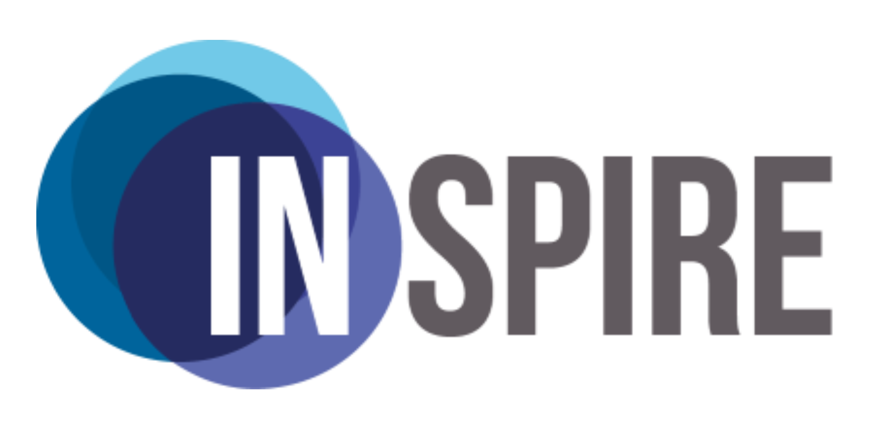
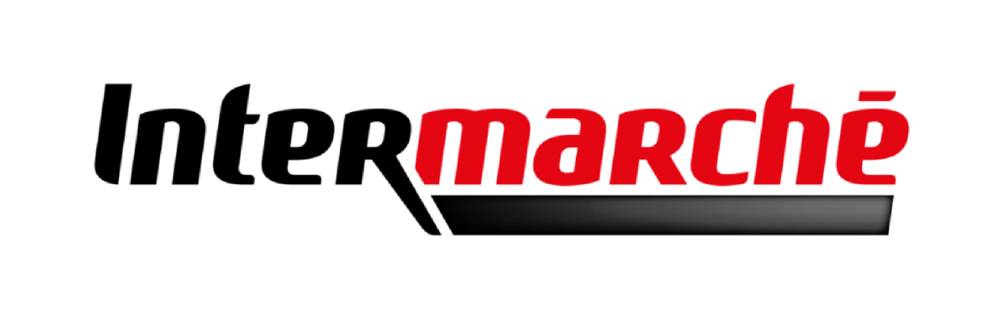

Éducation et Expérience Professionnelle
Mon parcours professionnel et mes réalisations
Éducation
En tant qu'étudiant en ingénierie à Télécom Saint-Étienne, je développe de solides compétences en informatique, cybersécurité et intelligence artificielle. Mes études combinent connaissances théoriques et projets pratiques, me permettant de concevoir des solutions logicielles, travailler avec des langages de programmation et appliquer des concepts avancés en mathématiques, physique et analyse de données. Je collabore également sur des projets de groupe qui simulent des défis d'ingénierie du monde réel, renforçant mes capacités en résolution de problèmes, travail d'équipe et gestion de projet.
- Programmation en C++, Python, HTML, CSS et JavaScript
- Exploration des fondamentaux et pratiques de la cybersécurité
- Travail sur des projets d'ingénierie collaboratifs
- Application des mathématiques et de l'analyse de données pour résoudre des problèmes
- Développement de compétences en résolution de problèmes et gestion de projet
Classe préparatoire aux grandes écoles (CPGE TSI)
Lycée Touchard Washington Le Mans, France 2022 - 2024Pendant deux années d'études intensives en filière CPGE TSI, j'ai construit une base solide en mathématiques, physique et sciences de l'ingénieur, tout en développant de fortes compétences en résolution de problèmes et d'analyse. Cette expérience m'a préparé aux concours d'entrée rigoureux des écoles d'ingénieurs françaises.
- Formation avancée en mathématiques et physique
- Renforcement de la résolution de problèmes et de la pensée analytique
Baccalauréat
Lycée Les Élites Sousse, Tunisie 2018 - 2020J'ai obtenu le Baccalauréat tunisien en Sciences Techniques avec Mention Très Bien. Ce cursus a fourni une base solide en matières scientifiques et techniques, combinant théorie et applications pratiques.
- Mathématiques et physique appliquée
- Mécanique, électronique et technologie
- Introduction à l'informatique et à la programmation
Expérience Professionnelle
Responsable Communication
Inspire JESaint-Étienne, France - Actuellement...
Une Junior Entreprise est une organisation à but non lucratif dirigée par des étudiants, fournissant des services professionnels aux entreprises tout en acquérant une expérience pratique. Elle fonctionne comme une vraie entreprise, permettant aux étudiants d'appliquer leurs connaissances académiques dans des projets concrets.
Gérer la présence d'Inspire sur les réseaux sociaux (Instagram, LinkedIn) en créant des publications, visuels et campagnes engageants pour promouvoir les activités et la marque de la Junior Entreprise.
Développer des stratégies de communication pour augmenter la visibilité et la portée auprès des étudiants, partenaires et professionnels.
Collaborer avec l'équipe de communication interne pour assurer une messagerie et un branding cohérents sur toutes les plateformes.
Surveiller les métriques d'engagement et adapter le contenu pour optimiser l'interaction et la croissance de la communauté.
Renforcer l'image externe d'Inspire en mettant en valeur les projets, partenariats et l'impact des activités de la Junior Entreprise.
Employé Polyvalent
Intermarché BergsonSaint-Étienne, France - 2025
Assisté les clients en fournissant des informations, des conseils et un support dans différents départements du magasin.
Géré le réapprovisionnement des stocks, l'étiquetage des produits et assuré que les rayons étaient organisés et visuellement attrayants.
Soutenu les opérations logistiques incluant le déchargement, le tri et le stockage des livraisons.
Développé l'adaptabilité, le travail d'équipe et les compétences de service client dans un environnement de vente au détail dynamique.
Employé Polyvalent
Intermarché Cagnes-sur-merCagnes-sur-mer, France - 2023
Assisté les clients en fournissant des informations, des conseils et un support dans différents départements du magasin.
Géré le réapprovisionnement des stocks, l'étiquetage des produits et assuré que les rayons étaient organisés et visuellement attrayants.
Soutenu les opérations logistiques incluant le déchargement, le tri et le stockage des livraisons.
Développé l'adaptabilité, le travail d'équipe et les compétences de service client dans un environnement de vente au détail dynamique.